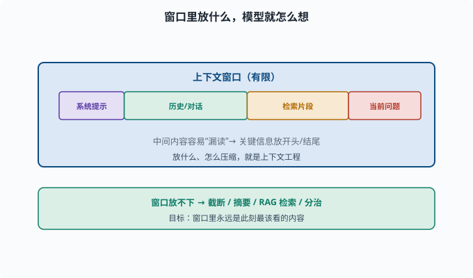
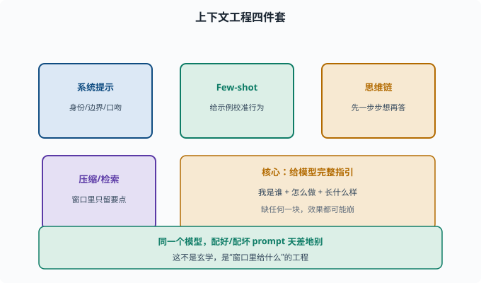

上下文工程：用好输入是 Agent 的生存技能
目标：把"怎么写 prompt、怎么管上下文、怎么压缩"当成一门硬本事。读完这一页，你能讲清系统提示词、少样本、思维链、上下文压缩与检索的作用，这是 Agent 落地的核心能力。
为什么"输入"本身就是工程
模型的能力是固定的，但给它的上下文可以是千差万别的。同样一个模型，配上好 prompt 与坏 prompt，效果天差地别。这不是玄学——模型只基于"窗口里的内容"工作（06-07），所以你把什么放进窗口，就决定了它怎么想。
**上下文工程（context engineering）**就是：系统性地设计、组织、维护窗口内信息，让模型产出最好、最稳的结果。

上图把模型真正"看到"的窗口拆成几段：系统提示、历史对话、检索片段和当前问题。窗口有上限，因此每一段都要精打细算；而长上下文中间的内容容易被注意力稀释而"漏读"，所以工程上会把关键信息放到开头或结尾。放什么、怎么压缩，正是上下文工程的核心动作。
基础技能一：系统提示词（system prompt）
很多 LLM 支持在用户消息前加一段系统提示，定义模型的身份、行为、边界：
你是一个严谨的工程师助手。
只根据提供的文档回答，不乱编。
保持回答简洁。
作用：
设定角色与语气
注入约束（别胡说、别过度自信）
定义输出格式
给出使用规则
系统提示是 Agent prompt 的"宪法"，deepseek-harness 的 session/system-prompt 就负责这一层（08）。
基础技能二：少样本示例（Few-shot）
在 prompt 里给几个输入-输出示例，模型就能模仿格式与思路：
输入：...
输出：...
输入：...
输出：...
（新输入）
少样本不是教新知识，而是校准行为：让模型知道"你要的这种格式、这种判断方式长什么样"。常用在输出格式稳定、需要结构化结果的场景。
基础技能三：思维链（CoT）
06-08 提过：让模型"先一步步想"，往往更准。
直接问：这个逻辑题答案？ （可能直接错）
引导：请一步步推理再给出答案。 （准确率更高）
进阶玩法还有两种：自洽性（self-consistency）——让模型独立生成多条推理路径，对最终答案投票取多数；思维树（Tree-of-Thoughts）——把推理组织成一棵可回溯的树，允许探索多个分支再挑最好的。Agent 的"规划"也常靠 CoT：让模型先列出要调用什么工具、再执行。
长上下文管理：窗口放不下时
窗口有限（06-07），长对话/长文档塞不下时要有策略：
截断：只留最近 N 轮/最近一段
摘要：把旧内容压缩成要点放回
检索（RAG）：只把与当前问题相关的片段放进窗口
分治：把长文档切片、分多次处理再汇总
优先级：关键信息放开头/结尾（中间易被"漏读"）
这些都直接影响成本与效果。让"窗口里永远是此刻最该看的内容"，就是上下文工程的核心。
压缩与结构化
善用结构化减少 token 又保留信息：
表格 / 列表 比大段散文省 token 且更清晰
用紧凑符号代替冗长重复
把代码/日志缩成关键行
对 Agent，工具返回常是大段输出，先让工具"只返回关键摘要再塞回窗口"，能省下可观 token（08、10）。
一个最小实践：对比好坏 prompt
# 坏：什么都往里塞、没约束
def bad_prompt(text):
return f"请帮我处理一下这个：{text}"
# 好：明确身份、约束、格式、few-shot
def good_prompt(text):
system = "你是会议纪要助手，只用原文信息，不编造，输出要点列表。"
few = "示例：\n原文:『讨论A和B』\n输出:\n- A\n- B\n"
return system + "\n" + few + "\n原文: " + text + "\n输出:"
肉眼可见后者给模型"我是谁、怎么做、长什么样"的完整指引。

上图把上下文工程的方法收敛成四件套：系统提示定义身份与边界、少样本示例用范例校准行为、思维链引导先推理再作答、压缩与检索保证窗口里只留要点。右上角的琥珀条点出内在逻辑——好的 prompt 本质是给模型一条完整的指引链路，缺少任何一块都可能让输出失去稳定性。
思考题
- 上下文工程的核心思想是什么？为什么它如此重要？
- 系统提示词通常承载哪几类信息？
- 少样本示例是在"教新知识"还是"校准行为"？为什么？
- 窗口放不下长文本时，有哪些可用的上下文管理手段？
- 为什么"关键信息放开头/结尾"比放中间更稳？
参考答案
- 核心是"系统性地设计窗口内的内容"从而控制模型行为与效果。因为模型只基于窗口工作，放什么进去就决定了它怎么想，且成本也由 token 决定。
- 角色与语气、约束（不乱编/不自信过度）、输出格式、使用规则。系统提示是对话的"宪法"。
- 校准行为而非教新知识。示例让模型看清"你要的格式/判断方式"，是利用模型已有能力去对齐你的期望，不新增事实。
- 截断只留最近、摘要压缩旧内容、用 RAG 检索相关片段、长文档切片分治、并按优先级把关键信息放显眼位置。
- 因为过长上下文中，靠近窗口中间的内容会因注意力权重被大量 token 稀释而容易被"漏读"；开头和结尾通常被模型更充分注意，因此关键信息放首尾更可靠。
下一步
- 想看到"检索增强"如何注入外部知识 → 07-08 RAG。
- 想把这些技术组成 agent 循环 → 08 Agent 基础。
- 想评估 prompt/上下文方案是否真的更好 → 07-07 评估基准。